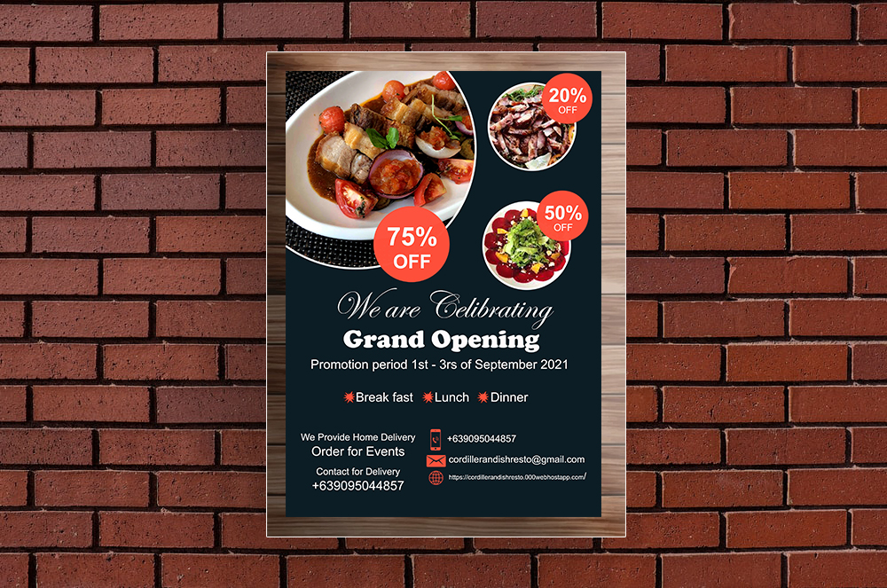

Main Products
-
Pinikpikan with Etag
“Pinikpikan”Is a Cordilleran culutural way of cooking chicken added with salted sun dried pork meat called “Etag”.
₱ 100.00 per serving -
Pinikpikan with Kini-ing
Chicken added with salted smoked pork meat which name “Kini-ing”.
₱ 100.00 per serving -
Pork Dinawis/Tinuno
barbequed grilled pork belly.
₱ 130.00 per serving
-
Pork Wat-wat
compose of sliced pork fat, lean, liver and pineneg.
₱ 145.00 per serving -
Pork Crispy Silet
Small intestine of a pig that dip fried until it crispy.
₱ 100.00 per serving -
Beef Bulalo
a soup stewed beef shanks, Marrow and soft bone added with corn.
₱ 200.00 per serving
In addition to the products the restaurant also serve Local wines and deserts.
Target Market
The target market of the proposed business are the Tourists, Students, Office workers, local residents and passersby.
Market Segmentation
- Tourist
- Office workers
- Local Residents
- Students and Passersby
Primary the target market of this business is The Tourist. since the restaurant location is one of the tourist spots of Baguio city, and the place is surrounded by hotels, Condo units, inns, and transient houses.
The second primary target market of the proposed business plan is the office workers since the location is near government offices and office buildings.
The third primary target market of the proposed Business is the local residents.
The fourth primary target market are the students and passersby since our location is near the highway.
Competitors
- Direct Competitors
- The Igorot Chef Restaurant
- Indirect Competitors
- Mamata’s Bulalo
- Amazon Restaurant
- Yamashita Japanese Restaurant Noodle House
- Som Tam Thai Restaurant
- Kung Jeon Korean Palace
- Grumpy Joe
- Good Taste Café and Restaurant
- White Moon
This restaurant also offered the same cuisine that the business also offer. But unlike them the business dishes are limited. We only offer Cordilleran dishes. They are located at Pilando center Magsaysay road Baguio city.
Mamata’s bulalo offers Filipino and Asian cuisine. And their main dish is bulalo. The prices on their menu seem okay. There restaurant located at Leonard Street, Baguio city. They are number 121 of 383 restaurants in Baguio city.
Amazon restaurant offers Asian Koreanfood. Located at Leonardo wood road, Baguiocity. They are Number 118 of 383 restaurantsin Baguio city.
A Japanese restaurant that offers bothAsian and Japanese cuisine. Located atLeonardo wood road, Baguio city. They arenumber 137 restaurants in Baguio City.
Is it a Thai Resto that offers Thai foods?Located at Leonard terraces 3rd floorLeonard wood road above Rustan's marketBaguio City. They are number 129 of 383restaurants in Baguio city.
Offers eat all you can buffet, and Korean Asian cuisine. Located at No.38 south Marketing Plan Page 9 Drive, Baguio City. They are number 17 of 383 restaurants in Baguio City.
Offers Italian and American pizza. Located at Leonard wood Baguio city. They are number 24 of 383 Restaurants in Baguio city.
Offers Filipino Chinese cuisine. Locateat Carino Street, Otek Street Baguio city.They are number 137 of 383 restaurants inBaguio City.
White moon restaurant offers Filipino Asian food. Located at Leonardo wood road number 2, Baguio City. They are number 187 of 388 restaurants in Baguio city.
Pricing Strategy
The pricing strategy of the business is Cost Leadership is the mechanism of establishing a competitive advantage by having the lowest cost of operation in the industry. This strategy is especially Marketing Plan Page 10 Beneficial in a market where the price is an important factor.
The primary objective of a firm aiming to attain cost leadership is to become the lowest-cost producer in comparison to the competitors. This is usually achieved by large scale production which enables the firm to attain economies of scale or by innovating the production process.
Promotion Strategy
The company plans to use social media as one of the main means in promotion for example video advertisement. In addition, the company is planning touse as well as Posters, brochures, Billboards and promotional local radio stations.
Sample Poster
Sample Brochure

Strength
- Product Differentiation from other restaurants.
- The ambiance of the Resto reflects the cordilleran culture
- The resto offers low price menu.
The restaurant offers cordilleran dishes that the nearby restaurant doesn’t offer.
By using the cordilleran Culture such as “Tapis” (Igorot clothing), Gongs and weapons as well as some cultural portraits to Decorate the Resto, in addition to using Igorot hut as exterior design.
The price will be affordable so that all kinds of life status can afford to dine.
Weaknesses
- Newly opened store.
- Limited dishes.
- Less stability.
- New to the industry.
The restaurant is barely opened and was the mostcrucial part of the business. That requiresgathering all resources to get customers.
Unlike other restaurants the business onlyserve Cordilleran dishes.
While other competitors have their own loyal customers and are already stable. The Business is still scouting for its own loyal customer.
The business is newly introduced to the public. Hence the resto is also new to the ears of the customers.
Oppurtunity
- Serving Only Cordilleran foods.
- All customers will be treated equally.
- Love to try new unique food.
- Food bloggers.
The business is theonly serves Cordilleran foods in the area.
Customerswill be equally treated no matter what status of the life they are.
Nowadays people loveto try new things especially in foods people arecraving form something new to their taste buds.
One of the best ways to promote the restaurant menu is thru bloggers. If the blogger likes the food and give a satisfying review this will be a great oppurtunity to introduce the restaurant menu thru social media. Yet most people sometimes believe in what others says.
Threats
- Competitors emerging in the area.
- Abruptly increase of product price in the market.
- Customer complains.
- Food poison.
If thecompetitors know of the business progress theymight also emerge the area.
Sometimes prices of goods in the markets increaseWithout prior notice especially vegetables andmeats.
Complains of the customerscan affect the business especially post itsComplaint on social media. Hence can decrease thepossible target customers.
Possibly food poison can affect customer trust and satisfaction with the business. That can lead to investigation and closure of the business.
Location
Gibraltar Road, Baguio City 2600. Near WrightPark and the mansion. Within this location where manytourist spots, office buildings, hotels, and transienthouse this is a perfect location for the business.